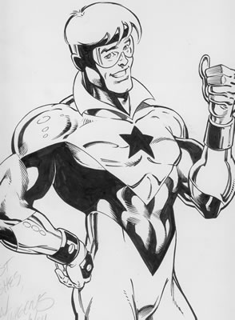

Okay, so I lied about Hawkgirl being the last comic character. I think Booster Gold might be it, but I’m sure there will be surprises ahead when we find out more AndrewApproved characters from comicdom.
“I used to wear yellow sometimes to pretend I was Booster,” recalls Andrew. “Once, I turned to Jen and called her Skeets… she was not amused.” When asked about Andrew’s obsessions, Jen tells us of a particularly memorable situation. “Once, he got confused and put on these angel wings like the kind you see Victoria Secret models wear, and he put on Booster Gold yellow and was some kind of crazy spawn child of Booster and Hawkgirl. It was quite disturbing. He ran around trying to give Keith a kiss while calling him ‘GL’ and kept on yelling at this yellow cereal bowl we had… I think he was singing lyrics to Get Low by Lil’ Jon & the Eastside Boyz or something.”
Booster Gold is considered to be dead in current D.C. continuum. “I sat in a corner of my room for days with the Skeets bowl on my head,” Andrew sobs.
I’m glad you didn’t post one of the JLU pictures for this loser. I had almost forgotten about him till Mark brought him up.
comment by Andrew — October 24, 2006 @ 5:39 pm
I thought about it, but I actually though he looked better in the JLU cartoon than in this picture, haha
comment by Oliver — October 24, 2006 @ 6:19 pm
thought*
comment by Oliver — October 24, 2006 @ 6:19 pm
This is a test
comment by Oliver — October 30, 2006 @ 9:50 am
another test
comment by Tester — October 30, 2006 @ 11:19 am
Saluti..
voi fatto bello lavoro
Ci era un alberino e un autore era come a trasmetta corsi fotografia .
Dell tutti corsi corsi formazione finanza e in pubblici singoli offre..
Hm.. Noi bisogno studio eccezionale risorse dove presenti corsi di aggiornamento.
Ammetta quello ricerca male :-/
comment by assophymaymn — August 31, 2007 @ 4:02 pm